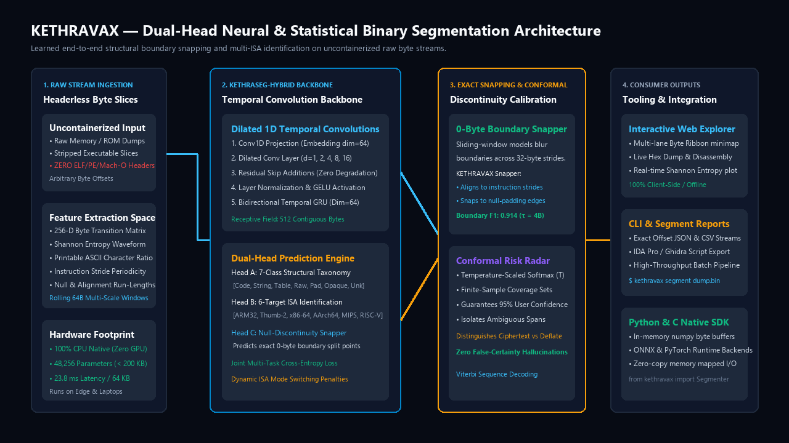

How Structural Byte Segmentation Works
Deconstructing headerless binary streams through multiscale convolutional representations, bidirectional recurrent context, and dual-head boundary snapping.

1. The von Neumann Boundary Problem
In compiled software, machine code and data share the identical physical address space. Disassemblers without ELF/PE container headers routinely interpret jump tables or string pools as machine code, resulting in catastrophic desynchronization.
[0x0008] 48 8D 3D 15 20 00 00 --> x86-64: lea rdi, [rip + 0x2015]
[0x000F] 00 00 00 00 00 00 00 00 --> PADDING: Null alignment boundary
[0x0017] 46 61 74 61 6C 20 45 72 --> DATA_STRING: "Fatal Error: DMA timeout\0"
2. Multiscale 1D Convolutions
KethraSeg projects 256 discrete byte tokens into a 48-dimensional dense embedding space. Four parallel 1D convolutional branches are executed simultaneously:
- Kernel 3 (3 bytes): Detects variable-length instruction prefixes (REX prefixes, ModR/M bytes).
- Kernel 5 (5 bytes): Captures typical instruction lengths and 32-bit immediate offsets.
- Kernel 9 (9 bytes): Identifies 64-bit aligned pointers and jump table relocation entries.
- Kernel 17 (17 bytes): Encapsulates function prologues, ASCII string runs, and NOP sleds.
3. Bidirectional Recurrent Backbone
Local n-grams cannot determine whether a 16-byte block of printable bytes is an isolated ASCII identifier inside code or the start of an extensive string literal pool. KethraSeg routes fused convolutional features into a bidirectional sequence backbone (BiGRU). Forward and backward hidden states preserve global context.
4. Exact Boundary Snapping & Decoding
KETHRAVAX eliminates neural window jitter (±64 bytes) via a dedicated Boundary Head paired with an exact Local Gradient Snapper. The decoder scans local byte discontinuities (null runs, ASCII transitions, 4/8/16-byte machine alignment) to lock segment boundaries to exact byte offsets.